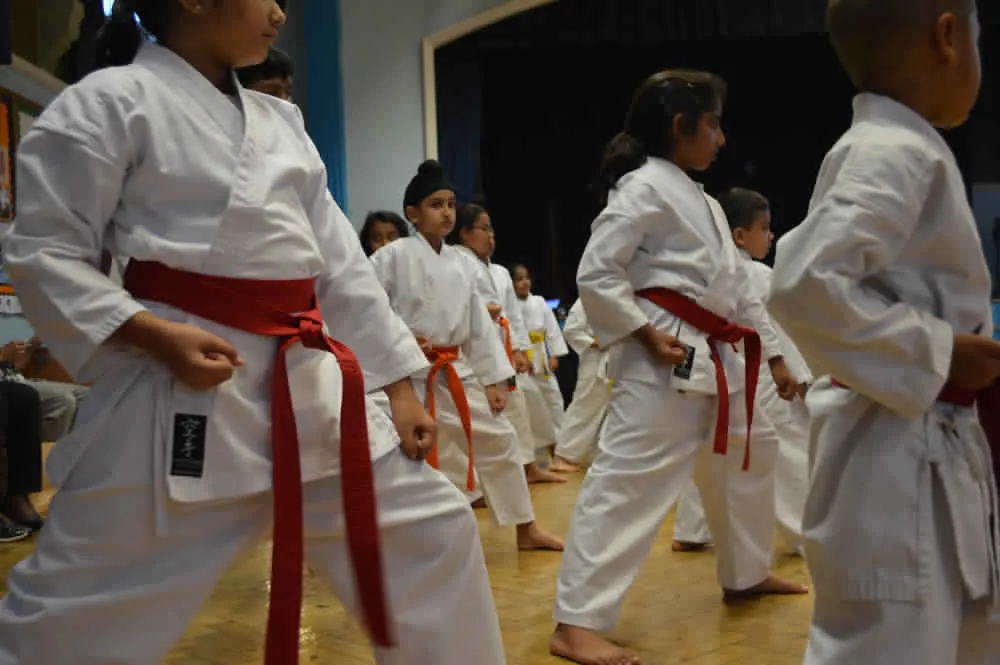
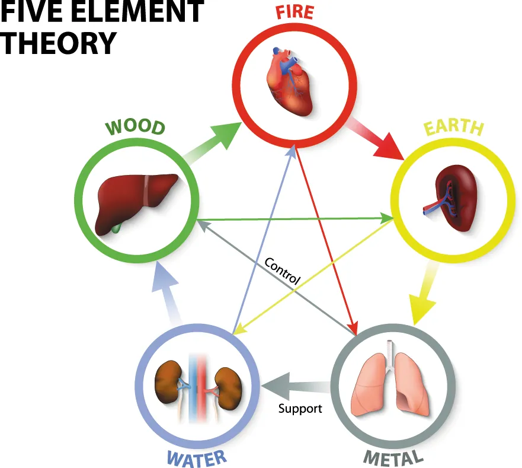

Evidence-Based Training (EBT), or Evidence-Based Practice (EBP), has served as a cornerstone in various industries, especially in academia and healthcare. It originated from the need to combine the best available research with professional expertise. EBT offers a structured learning approach that prioritizes proven methods over tradition or anecdotal experience. Researchers have thoroughly examined its academic roots, which has enabled various fields, including healthcare, education, and business, to successfully adopt EBT over time.Now, it is time for martial arts, including karate, to integrate this valuable approach into their training regimes.
What is Evidence-Based Training?
At its core, EBT involves using data, research, and well-documented outcomes to inform training methods and practices. It’s a structured process that asks practitioners to continuously evaluate what works, what doesn’t, and why. Professionals in many industries must stay up-to-date with the latest research and apply it in their practice.In healthcare, doctors utilize EBT to choose the most effective treatments, whereas in education, teachers implement research-backed methods to improve student learning.The common thread in both fields is the reliance on evidence to make informed decisions.
While the concept has been around for a long time, martial arts have yet to fully embrace it. Traditionally, martial arts training has relied heavily on passed-down techniques, philosophies, and anecdotal experience. While these time-tested methods hold great value, they often lack the empirical scrutiny that other industries demand. This is where EBT can step in, bridging the gap between tradition and modern knowledge.

Why Martial Arts Should Embrace EBT
Martial arts have deep roots in cultural tradition, with much of the training methodology based on principles established centuries ago.Many schools of thought in karate, judo, kung fu, and other martial disciplines emphasize adherence to traditional techniques passed down through generations. While these traditions play a valuable role in preserving the art form and its philosophies, they can sometimes resist evolution. This resistance often occurs alongside advancements in modern sports science and training research.
EBT in Martial Arts
Integrating EBT into martial arts practices allows practitioners to respect their traditions while improving training efficiency, reducing injury risk, and enhancing overall performance. When martial arts training is informed by research, it unlocks a deeper understanding of body mechanics, mental preparedness, and injury prevention. For instance, sports science has conducted extensive research on biomechanics, injury prevention, and performance optimization, all of which can significantly enhance martial arts practice.
How EBT Can Enhance Karate Training
One clear example of how EBT can benefit martial arts training is by adopting scientifically backed conditioning techniques.In karate, the practice of kata (forms) and kumite (sparring) focuses on developing not just skill and technique, but also strength, speed, and endurance. Practitioners can apply evidence based approaches to strength and conditioning to target specific muscle groups essential for martial arts, ensuring their training directly enhances performance.
Injury Prevention in Martial Arts
EBT can also enhance recovery and prevent injuries. Like any physical activity, martial arts carry a risk of injury, particularly to the joints, muscles, and bones. Incorporating evidence-based practices can minimize injury risk and promote longevity in practice. These practices include mobility training, stretching routines, and recovery protocols. For instance, studies have shown that dynamic stretching is more effective for performance than static stretching when done before training. Incorporating these insights into martial arts warm-ups prepares students for success.
Additionally, research-backed methods can enhance psychological conditioning and mindfulness, which are integral to martial arts practice. Techniques such as visualization, meditation, and cognitive behavioral approaches improve focus, reduce anxiety, and enhance performance under pressure. Aligned with the mental discipline aspects of martial arts, these methods can be refined using evidence-based insights. This refinement helps practitioners sustain their mental strength during training and competition.
Implementing EBT in Martial Arts Schools
Adopting EBT in martial arts doesn’t mean disregarding tradition or diluting the essence of the practice. Instead, it calls for a balance between time-honored techniques and modern research. Martial arts schools can implement EBT by staying informed about the latest research in sports science, biomechanics, and psychology. Instructors can encourage a learning environment that emphasizes questioning and understanding. Recognizing why a technique works is just as important as knowing how to execute it.
Sports Science in Martial Arts
Furthermore, EBT offers opportunities for collaboration between martial artists and sports scientists. By partnering with researchers, martial arts schools can integrate data from studies on human performance, nutrition, and recovery. This collaboration provides students with a more comprehensive training experience rooted in both tradition and modern science.
Conclusion: A New Era for Martial Arts Training
Evidence Based Training is a well-established methodology that has transformed how professionals across many fields approach learning and skill development. Martial arts now have the opportunity to embrace evidence-based training (EBT) to enhance their methods while honoring their rich traditions. By incorporating research-backed techniques in conditioning, injury prevention, and mental preparation, martial arts can evolve. This evolution offers practitioners a more effective path to mastery. In this new era, martial artists can leverage both centuries of wisdom and a vast reservoir of modern knowledge.This approach allows them to become well-rounded, skilled, and mindful practitioners.